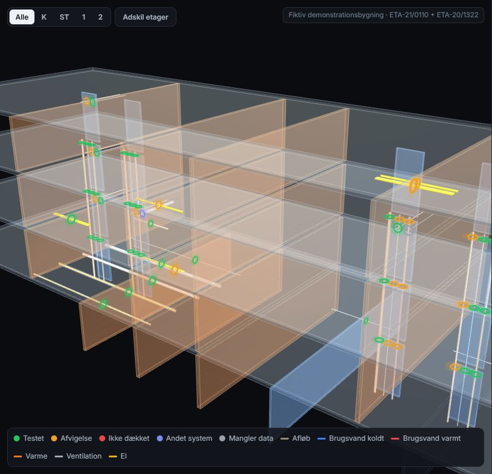

Brandteknisk rådgivning · gennemføringer
Fra fritekst-forespørgsel til kontrolleret udførelse, i ét spor.
Gennemført 2.0 formaliserer rådgiverens arbejde: struktureret forespørgsel med forhåndstjek mod de testede opbygninger, sagsgang med præcedens og 4-øjne-kontrol, udstedte vurderinger der kan verificeres, materialeliste med varenumre og dokumentation til bygherren. Hver beslutning peger på ETA, afsnit og side.
Alle sager, kunder og projekter på siderne er fiktive demonstrationsdata. Testede opbygninger er udtrukket fra de offentlige ETA'er.

Arbejdsgangen
Før og efter
Samme seks leverancepunkter som i dag (beskrivelse, afvigelse, faglig vurdering, løsningsmodel, forudsætninger, dokumentation), men som data, så hvert trin kan kontrolleres og genbruges.
I dag
Med Gennemført 2.0
Moduler
Ni moduler, én vidensbase
Kvalitetssystem. Hver hændelse i en sag logges med tidspunkt, person og vidensbase-version og kædes med SHA-256. En ændret eller slettet linje opdages. Udsendelse kræver, at en anden rådgiver har kontrolleret udkastet.
Bygherrens kontrolpligt. Fra løsning til tjekliste, foto, underskrift og kontrol pr. tætning, samlet i en dokumentationspakke og en CSV til dokumentationssystemet.
Gennemført 2.0 · beslutningsstøtte, ikke godkendelse · kilder: ETA-21/0110 (Mulcol Multimastic C System), ETA-20/1322 (Mulcol Multicollar Slim) · demonstrationsdata er fiktive.